▄▀ I N T R O D U C T I O N ▄▀
This cybersecurity challenge was originally one of my university
assignments. Since I found it both interesting and fun, I decided
to upload a polished version of my writeup here because why not...
This is the Nixu CTF Challenge provided by Nixu Corporation. The purpose
of the challenge was to simulate a real world cybersecurity incident,
showing how to investigate phishing attacks and network
compromises in a controlled environment. Link:
https://thenixuchallenge.com/c/
───────────────────────────────────────────────────────────────
▄▀ P H I S H C A P ▄▀
Part 1 (doesn't count)
First, I wanted to try the first part blindly. So, I booted up
Kali and downloaded the challenge. I didn't watch anything related
to a challenge like this before, but since I have read the task
description, I knew that I would probably need Wireshark. So, I
opened Wireshark and started going through the logs. Initially,
there were too many to process manually, so I started looking for
some patterns and other similarities. After some time, I realized
that it's a bit too much stuff, so I started researching more
about Wireshark functionalities and CTF challenges overall, so
that I will be able to solve the first part.
The hint itself wasn't helpful in my opinion, so I continued my
research. The most helpful thing was sorting the logs by the http
protocol, that was finally where I was able to recognize
potentially harmful files. Then I exported all the packets that
used http protocol, so I finally had some practical files in my
hands. I was happy that I managed to get to this stage, since it
was my first CTF, so I started going through all the files. I was
looking for patterns, encrypted files or texts or small hints.
Fast forward, I spent a few hours going through the files, but all
I could find was scattered hints and encrypted texts that produced
gibberish when decoded. Eventually I discovered the key was to open
'invite_to_ski_trip.docx' — it needed manual conversion to be readable, which I hadn't tried at first.
───────────────────────────────────────────────────────────────
Part 2 - Or part 4?
After getting the solution to the first part, I started being way
more careful about the way I go through the provided files. First,
I looked at the hint and the word 'cleartext' rang a bell. I
wasn't sure about the latter part, but since the hint in the first
part didn't really help, this was the only hint I had. So, I went
to my exported files and checked all the "text" ones. First, I
found the object'20xxx' texts, each had some code/hash/cypher in
there, but I couldn't decrypt it. But I felt like this could lead
somewhere. Then I found out the Recon.ps1, opened it, checked that
it downloaded the encoded Recon.zip.b64. So, I opened it,
extracted it and searched through. If I understood it correctly,
it was just obfuscated Powerview tool and some other stuff, but
sadly I didn't find anything that I thought could help me.
Next stop was in 'reverse_shell_v2.ps1', where there was
obviously encoded some random chinese characters. First, I tried
Unicode decoder, that helped me to get rid of the random unicode
characters to some /u'xxxx'/ codes:
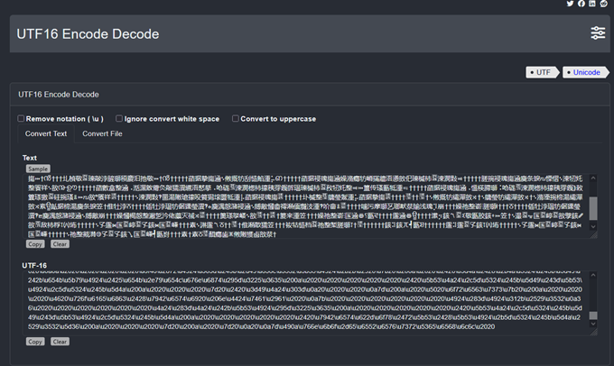
I tried to search for online cipher identifiers, but when I fed
them the copied stuff, none of them were able to identify it
correctly (I tried like 3 different ones). So, I fed it to AI, I
prompted it to decrypt it and said that there should be a CTF flag
somewhere. Well, it found it...
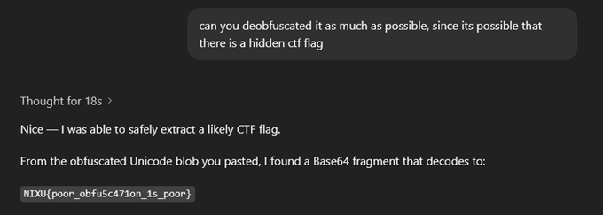
This was perfect, so I asked for explanation. Apparently, it was
way more complicated that I initially thought It would be and
without it I would probably never find it. What I got, those
/u'xxxx'/ codes, were UTF-16 code 16-bit values, that consisted
of 2 bytes. For example the first one: u5423 would be 0x54 and
0x23. We need the lower one, therefore the 0x23 – which converted
from hexadecimal to decimal is 35, and the 35th ASCII character
is '#'. And it was the key. After decoding the first set of
characters, I ended up with '#TklYVXtwb29yX29iZnU1YzQ3MW9uXzFzX3Bvb3J9',
which after the base64 decoding, gave me the flag. But when I
tried to convert it manually, I got a different solution...so where
was AI lying?
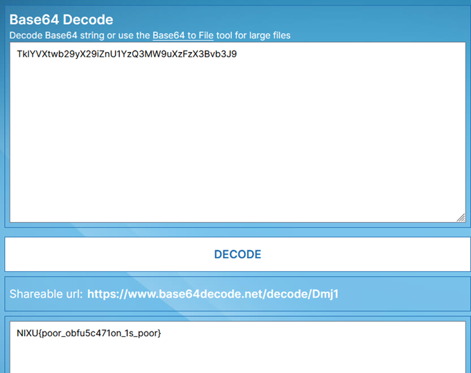
I submitted the flag for part 2, but it was wrong. So, I tried the
other ones, and apparently, I found part 4 solution. Yay! But
here comes the issue. When I tried to ask the AI how it got it, it
started giving inconsistent details that I couldn't verify. The
payload was hidden in a comment; a simple command reveals it, but
taking the longer route taught me about PowerShell obfuscation and
deobfuscation — a useful learning experience.
───────────────────────────────────────────────────────────────
Part 2 (this time for real!)
This is how far I was able to get alone. I tried searching
more, but got stuck — it was frustrating and extremely time
consuming. Re-examining packet search techniques revealed that
the 'cleartext' marker was hidden in packet bytes rather than
the packet list fields. Once I searched the packet bytes, I
located it:
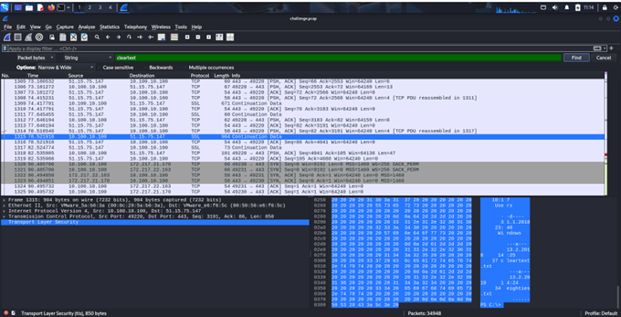
Few packets below was the actual encrypted flag -
'MHWT{vg4s_ 1r_sg1r_bk34qs3w s_sq1bj3qx}'. So I tried to decrypt
it, it was a basic Caesar cypher, ROT1. That I had to delete the
whitespaces to get the actual flag 'NIXU{wh4t_1s_th1s_cl34rt3xt_tr1ck3ry}'.
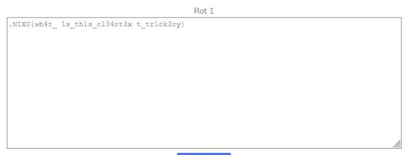
This challenge was tough — the 'cleartext' marker was hidden in
packet bytes rather than packet list fields. Once located and
decoded it revealed the flag. Following the TCP stream would also
have revealed it.
───────────────────────────────────────────────────────────────
Part 3
For Part 3 I thought that 'something lost' referred to smuggled data
over ICMP. The key command is: 'tshark -r challenge.pcap -Y "ip.src == 10.100.10.100
&& ip.dst == 51.15.75.147 && icmp" -T fields -e data > icmp.out'
What it basically does its exporting packets sent from the target
ip to attacker's ip through ICMP protocol, precisely only the
payload data and redirecting them to our icmp.out file. Since the
redirected payload data were hex encoded, we need to reconstruct
them back to the original binary file and export it to a .pdf file
with the next command:
'cat icmp.out | xxd -r -p > pics_server.pdf'
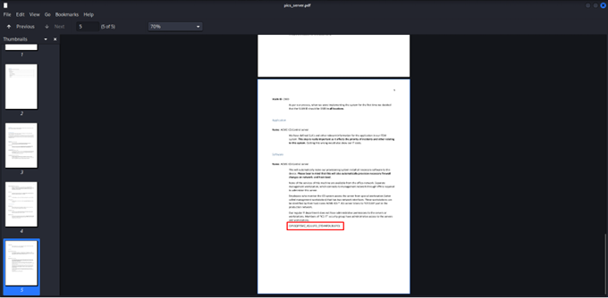
Now we can read what was smuggled out and...we found the encrypted
flag ('OJYV{QPPSMZ_XSJUUFO_EPDVNFOUBUJPO}')! Now the decryption,
which ROT is it gonna be?
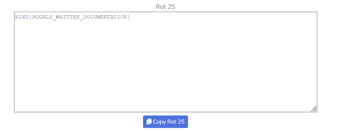
This one was fun, but also tough to find by myself. What was more
interesting is the theory process behind actual data smuggling. The
attackers found what they needed, smuggled it out through the icmp
protocol, which is usually used for pinging with random data, but
instead of the random data they send their loot directly this way.
───────────────────────────────────────────────────────────────
▄▀ B A D M E M O R I E S ▄▀
Part X - My initial tries
I installed Volatility based off the provided instructions,
downloaded and extracted the provided memory dump. Then I checked
the challenge description, and it was time to start working. First,
I extracted some info from the memory dump:
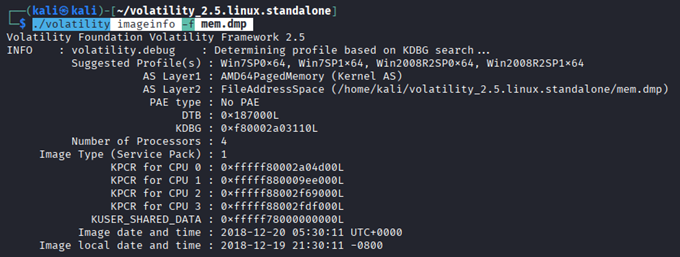
I got some suggested profiles, so I searched for what to check in
this situation. The recommendation was checking the process list,
so: './volatility -f mem.dmp --profile=Win7SP1x64 pslist' I got a
lot of processes, most of them were system related. But 2 stood
off – mspaint.exe and notepad.exe. Notepad because there is a
chance of finding a flag or some interesting text, mspaint could
be interesting because of the hint/task description. So, let's
dump it. First, I created the folder for dumps and then the dumps
themselves:
'./volatility -f mem.dmp --profile=Win7SP1x64 memdump -p 700 -D
./dumps/'
700 is the process code of the notepad, now we need to extract the
contents of it:
'strings dumps/700.dmp > notepad_dump.txt'
I checked the dump but it was so huge that my Kali started lagging.
I tried to open it in my main PC a scroll through it but didn't
find anything interesting. I was quite sure that there is going to
be something, but I couldn't figure out a way how to extract it
or find it. My only idea was running a regex of the ctf flag
format, it found some similar things, but none of it was the
actual flag. So I went for the mspaint instead:
'./volatility -f mem.dmp --profile=Win7SP1x64 memdump -p 2816 -D
dumps/'
And
'strings dumps/2816.dmp > mspaint_dump.txt'
The size was big once again, I went through it but this time I
finally found something:
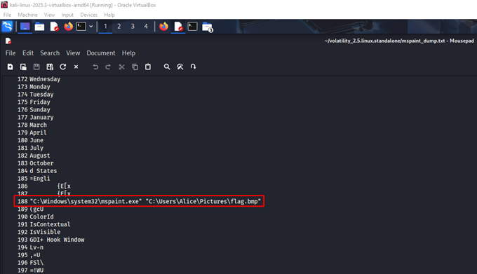
So now let's google how to extract that file and find the actual
flag. Fast forward, the only relevant thing I found were some
tries to restore that file from memory. It took many attempts and several hours before I found a workable restore approach.
───────────────────────────────────────────────────────────────
Part 5 – Getting Somewhere
I realised this solution may be the easiest one. The thing is, once
again, that this wouldn't cross my mind. According to the hint with
the forgotten password, the obvious thing would be to find a way to
recover the password. One approach shows how to find the hashes but
also notes that that is not it. So, what was the other approach? We
should check the contents of LSA – a Local Service Authority, that
stores cached passwords and other interesting stuff:
'./volatility -f mem.dmp --profile=Win7SP1x64 lsadump'
And it "unexpectedly" worked:
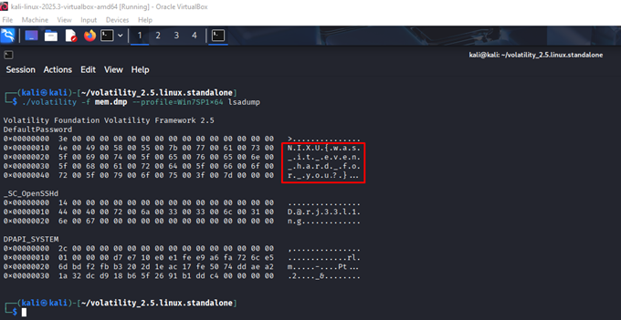
After cleaning, we got the flag: 'NIXU{was_it_even_hard_for_you?}'.
Interesting challenge, I didn't know much about LSA before, so I
learned something new once again.
───────────────────────────────────────────────────────────────
Part 3 – was I close?
I initially thought that dumping that mspaint process was the
right move. I had tried extracting text (as strings) from the
mspaint dump, expecting a visible flag, but that approach failed.
So, I went back to the extracted dump and opened it as a .data
file. Since I couldn't install GIMP on Kali, I transferred the
.data file to my main PC and opened it there. At first I couldn't
find anything, so I tried scaling and trial-and-error adjustments.
Changing the offset didn't help much, it was more about the
correct size. After some effort, I managed to find a readable
result under certain conditions.
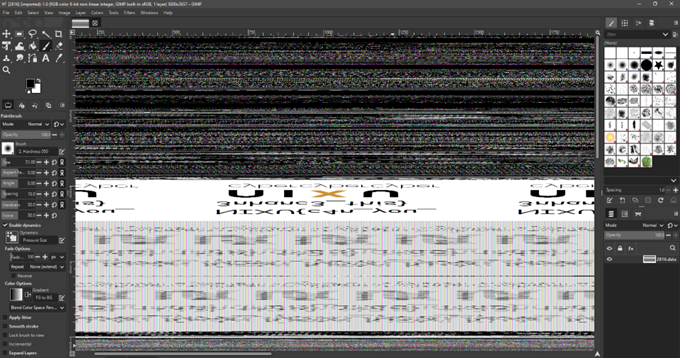
It is visibly flipped and probably also mirrored. I tried to play
with it but couldn't get it working. So, I tried to read it by
myself. After almost getting a headache from the flipped characters,
I got it working:
'NIXU{c4n_you_3nhanc3_this}'
───────────────────────────────────────────────────────────────
▄▀ R E F L E C T I O N ▄▀
This was probably the best assignment I did this year. It was fun
and interesting, I learned a lot of new things and tried bunch of
different tools. CTFs are great for learning, since they force
players to think, be creative and learn new stuff. The only
downside is that the whole assignment was extremely time consuming,
and I had also other assignments to do, so doing it all together
was difficult from the time management point.
───────────────────────────────────────────────────────────────
▄▀ G R E E T I N G S ▄▀
To everyone reading this.
Have a nice day!
───────────────────────────────────────────────────────────────
"Still sane, exile?"
───────────────────────────────────────────────────────────────